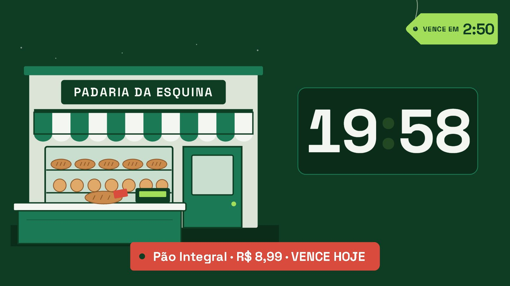
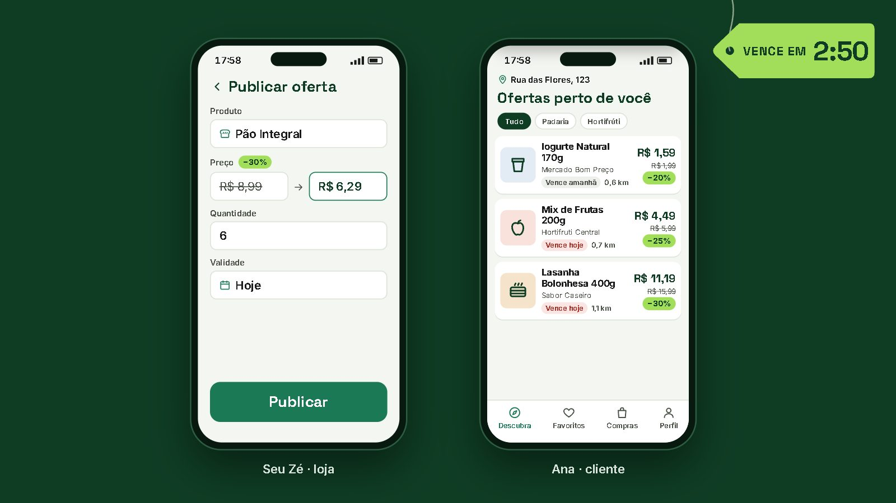
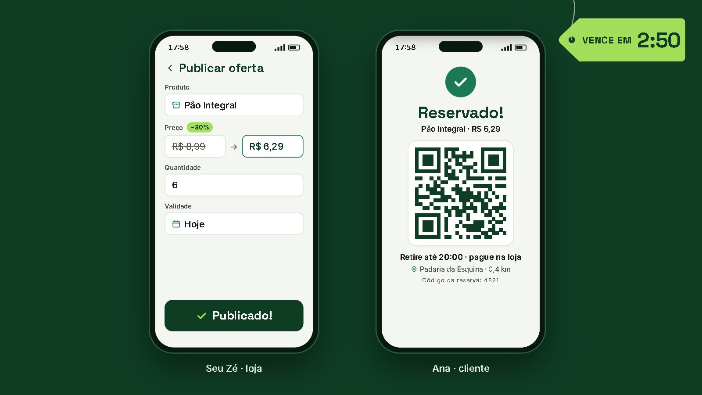
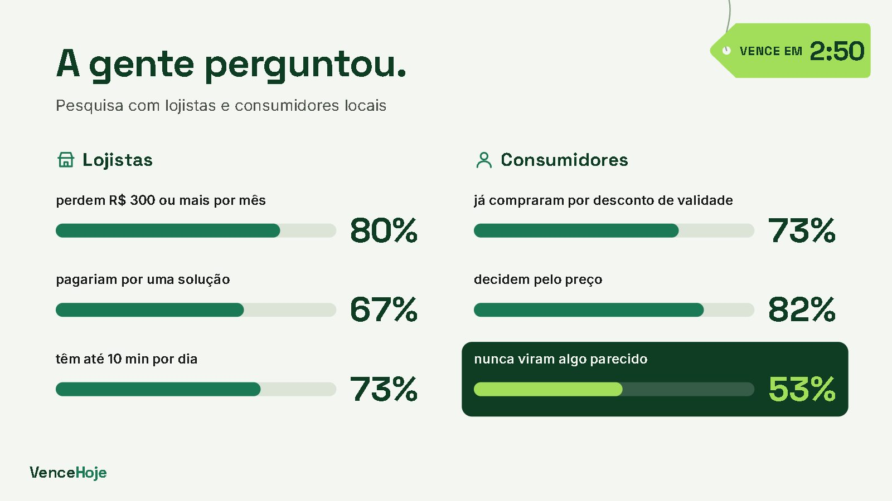
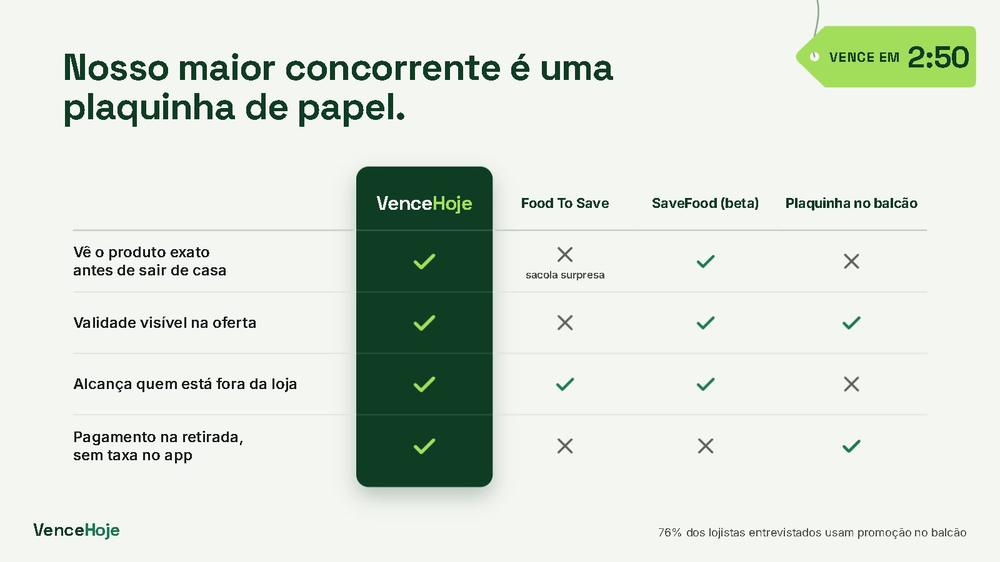
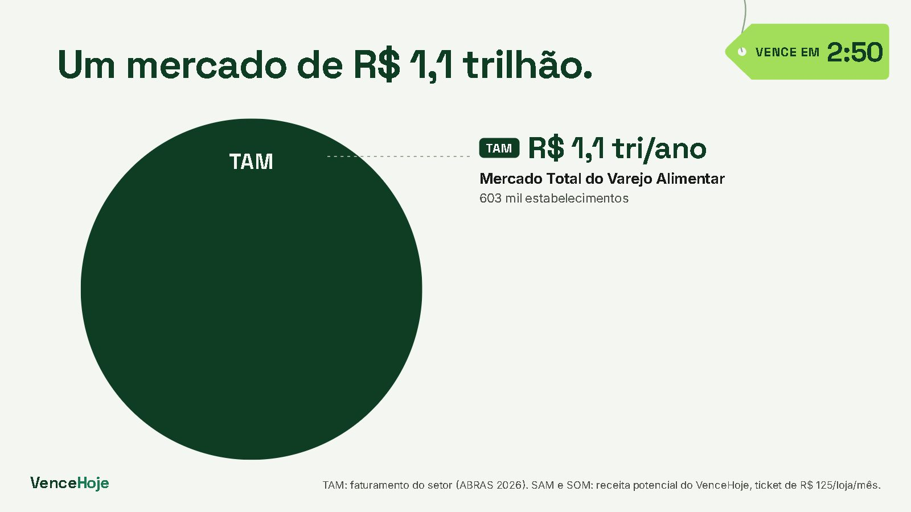
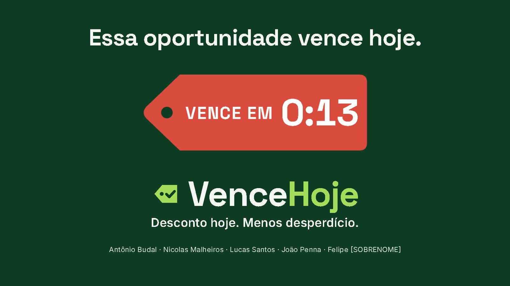
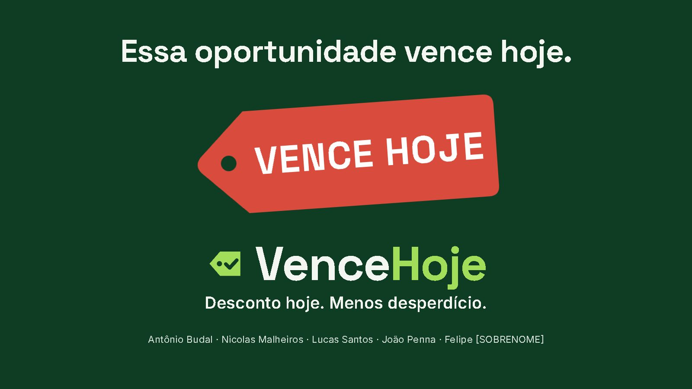

Antônio Budal · Nicolas Malheiros · Lucas Santos · João Penna · Felipe [SOBRENOME]
2:50tempo-alvo (10 s de folga)
9 slidesS3, S8 e S9 têm cliques internos
5 pessoasencenação + apresentação
Linha do tempo
Bloco
Tempo
Duração
Quem fala
Slides
Etiqueta ao entrar
1. Problema (encenação)
0:00–0:35
35 s
P1, P2, P3 atuam · P4 narra
S1 (0:00), S2 (0:15)
2:50 · 2:35
2. Solução + app + área
0:35–1:10
35 s
P4 narra · P1, P2, P3 atuam
S3 (0:35), S4 (0:58)
2:15 · 1:52
3. Pesquisa
1:10–1:35
25 s
P2
S5
1:40
4. Benchmark
1:35–1:55
20 s
P5
S6
1:15
5. Fonte de receita
1:55–2:15
20 s
P1
S7
0:55
6. TAM/SAM/SOM
2:15–2:35
20 s
P3
S8
0:35
7. Conclusão
2:35–2:50
15 s
P5 + todos
S9
0:15
Papéis
Pessoa
Nome
Na cena
Apresenta
Adereço
P1
Seu Zé, dono da Padaria da Esquina
Fonte de receita
avental ou boné, pão com etiqueta "R$ 8,99 · VENCE HOJE", celular
P2
Ana, a cliente
Pesquisa
celular
P3
A Lixeira
TAM/SAM/SOM
placa "LIXO" no pescoço ou saco de lixo preto
P4
Narrador
Problema e solução
—
P5
Passa os slides na cena
Benchmark e conclusão
passador de slides
A coluna Nome está em branco porque os papéis ainda não foram distribuídos. Preencha à mão.
Como passar os slides (P5)
Teclas
→EspaçoPageDown ou clique esquerdo: avança (inclusive os cliques internos)
←PageUp ou clique direito: volta
T inicia ou pausa a etiqueta · R zera a etiqueta
F tela cheia · Home volta ao S1
N abre a janela de notas (roteiro + próximo clique)
A etiqueta (contagem regressiva)
Começa em 2:50 e só corre depois de T, no início do S1.
Nos últimos 20 s fica vermelha e pulsa.
No S9 vai para o centro e se ajusta para 0:15, mesmo se vocês estiverem adiantados ou atrasados.
O clique final leva a 0:00 e carimba “VENCE HOJE”.
Antes de subir ao palco
Abra o index.html local (funciona sem internet). Reserva: pitch-vence-hoje.vercel.app
Se o PC estiver com as animações do Windows desligadas, coloque movimento: "completo" no CONFIG ou ative os efeitos de animação.
Aperte F (tela cheia) e confira o S1 parado em 19:58.
Se usar notas, aperte N e arraste a janela para o notebook.
Teste o passador: ele deve mandar →/← ou PageDown/PageUp.
Adereços: avental, pão com etiqueta, placa “LIXO”, celulares.
Como ler este roteiro
P4 quem fala[ação em cena]CLIQUE P5 avança
Plano B · B1trecho que pode ser cortado: se o ensaio passar de 3:00, corte nesta ordem (B1 → B5).
Os prints mostram a tela em cada momento. A etiqueta aparece em 2:50 porque foi capturada parada; no pitch ela corre.
S1
Cena: Padaria da Esquina
Tempo0:00–0:15QuemP1, P2, P3 atuamEtiqueta ao entrar2:50

[P1 atrás da mesa segurando o pão com a etiqueta. P3, a Lixeira, ao lado, esfregando as mãos. P5 aperta T para iniciar a etiqueta. P2 entra mexendo no celular.]
P2 (Ana)[olha a etiqueta, faz careta]: “Quase nove reais num pão? Hoje não, Seu Zé.” [sai]
P1 (Seu Zé)[olha o relógio, suspira]: “Oito da noite… vence hoje mesmo.” [estende o pão para a Lixeira]
P3 (Lixeira)[pega o pão, animada]: “Hmm, esse ainda tava bom, hein? Valeu, Seu Zé! Com esse, já são trezentos reais seus só esse mês.”
[0:15 — todos congelam. P4 entra na frente da cena.]CLIQUE → S2
S2
Quem ganhou foi o lixo
Tempo0:15–0:35QuemP4 narraEtiqueta ao entrar2:35
P4 (narrador): “Repararam? O pão ainda estava bom. O Seu Zé perdeu dinheiro. A Ana perdeu a chance de pagar menos. Quem ganhou foi… o lixo.” [P3 acena, orgulhosa]
P4: “E isso não acontece só na Padaria da Esquina: o Brasil desperdiça cerca de 20 milhões de toneladas de alimento por ano.”
Tempo0:35–0:58QuemP4 narra · P1, P2, P3 atuamEtiqueta ao entrar2:15

Ao entrar
[Os três fazem a cena de trás para frente em 3 s: a Lixeira devolve o pão, a Ana volta de costas.]
P1 (Seu Zé)[digita no celular]: “Pão integral, de 8,99 por 6,29, vence hoje… publicado.” CLIQUE 1(“Publicado!” + notificação no celular da cliente)
Depois do clique 1
P2 (Ana)[o celular vibra]: “Pão integral a 400 metros, 30% mais barato? Reservado!” CLIQUE 2(tela de reserva com QR Code)

Depois do clique 2
[Ana vai até o Seu Zé, mostra o celular, paga, os dois sorriem] P3 (Lixeira)[sai de cena, desolada]: Plano B · B1 (−2 s)“É… hoje eu janto vento.” P4: “Isso é o VenceHoje.” CLIQUE 3(marca VenceHoje)
Depois do clique 3
P4: “A loja publica em segundos, o app mostra as ofertas perto de você, o cliente reserva e paga na retirada. Venceu? O anúncio sai sozinho.” CLIQUE → S4
S4
Como funciona + área
Tempo0:58–1:10QuemP4 narraEtiqueta ao entrar1:52
P4: “Começamos por Joinville: padarias, hortifrútis e mercados de bairro. Mas será que as pessoas querem isso mesmo?” CLIQUE → S5
S5
A gente perguntou
Tempo1:10–1:35QuemP2Etiqueta ao entrar1:40

P2[saindo da personagem]: “A gente foi perguntar, numa pesquisa com lojistas e consumidores locais. 80% dos lojistas perdem 300 reais ou mais por mês com vencimento, Plano B · B2 (−4 s)e 67% pagariam por uma solução. 73% dos consumidores já compraram por desconto de validade. E 53% nunca ouviram falar de nada parecido.”
P2[transição]: “Mas será que ninguém faz isso?” CLIQUE → S6
S6
Benchmark
Tempo1:35–1:55QuemP5Etiqueta ao entrar1:15

P5: “Faz, mas diferente. A Food To Save vende sacola surpresa: você paga sem saber o que vem. E 76% dos lojistas ainda usam a plaquinha no balcão, que só vê quem já entrou. No VenceHoje, você vê produto, preço e validade antes de sair de casa.”
P5[transição, apontando para P1]: “E como isso dá dinheiro, Seu Zé?” CLIQUE → S7
S7
Fonte de receita
Tempo1:55–2:15QuemP1Etiqueta ao entrar0:55
P1[ainda de avental]: “Quase metade dos lojistas pediu comissão, então é assim: eu só pago quando vendo. O cliente paga aqui no balcão, eu escaneio o QR Code da reserva e o VenceHoje fica com 15%, numa fatura no fim do mês. Plano B · B3 (−5 s)Quem quer destaque e relatórios assina o Premium, por 79 reais por mês.”
P1[transição, para P3]: “E o tamanho do mercado? Pergunta pra especialista em desperdício.” CLIQUE → S8
S8
TAM / SAM / SOM
Tempo2:15–2:35QuemP3Etiqueta ao entrar0:35

Ao entrar
P3[tira a placa de lixo]: Plano B · B4 (−3 s)“Agora que fiquei sem comida, vamos falar de mercado.” “O varejo alimentar movimenta 1,1 trilhão de reais por ano no Brasil.” CLIQUE 1 · SAM
Depois do clique 1
“Nosso mercado endereçável: 90 mil pequenos negócios urbanos no Sul e Sudeste, 135 milhões por ano.” CLIQUE 2 · SOM
Depois do clique 2
“E a meta para os dois primeiros anos: 200 lojas parceiras, começando por Joinville, 300 mil reais por ano.” CLIQUE → S9
S9
Fechamento
Tempo2:35–2:50QuemP5 + todosEtiqueta ao entrar0:15

Ao entrar
[A etiqueta vai ao centro, ajustada para 0:15. Os cinco se alinham lado a lado.]
P5: Plano B · B5 (−6 s)“Todo dia, comida boa vira lixo às oito da noite. Com o VenceHoje, o Seu Zé recupera dinheiro, a Ana economiza e a Lixeira passa fome.” [P3 faz cara de choro]
P5[olhando para a banca]: “Banca, comida tem prazo de validade. Essa oportunidade também.” CLIQUE FINAL(etiqueta vai a 0:00 e carimba “VENCE HOJE”)

Depois do clique 1
TODOS[apontando para a banca]: “E ela vence hoje!”
Plano B de tempo (se passar de 3:00)
"É… hoje eu janto vento" vira só uma careta (−2 s).
Na pesquisa, tirar "e 67% pagariam por uma solução"; o número continua no S5 (−4 s).
Na receita, tirar a frase do Premium; ele continua no S7 (−5 s).
No TAM, tirar "Agora que fiquei sem comida, vamos falar de mercado" (−3 s).
Na conclusão, tirar a primeira frase do P5 e ir direto para "Banca, comida tem prazo de validade…" (−6 s).
Números para ter na ponta da língua
≈ 20 mi t/anoalimento desperdiçado no Brasil (PNUMA/UNEP, 2024)
R$ 1,1 tri/anoTAM · 603 mil estabelecimentos
R$ 135 mi/anoSAM · 90 mil PMEs urbanas no Sul/Sudeste, cidades > 100 mil hab.
15%comissão por reserva retirada, em fatura mensal
R$ 79/mêsPlano Premium: destaque no app + relatórios de vendas
R$ 125ticket médio por loja/mês = R$ 135 mi ÷ 90 mil ÷ 12
200 × 125 × 12= R$ 300 mil/ano (conta do SOM)
Joinvilleárea inicial: padarias, hortifrútis, mercados de bairro
Pesquisa · lojistas: 80% perdem R$ 300 ou mais por mês · 67% pagariam por uma solução · 73% têm até 10 min por dia. Consumidores: 73% já compraram por desconto de validade · 82% decidem pelo preço · 53% nunca viram algo parecido. Não citar o número de entrevistados.
Perguntas prováveis da banca
Pergunta
Resposta em uma frase
"Se o pagamento é na loja, como vocês garantem a comissão?"
Cada reserva gera um QR Code; o lojista escaneia na retirada, o que confirma a venda e baixa o estoque, e no fim do mês recebe uma fatura (Pix ou boleto) só das retiradas confirmadas.
"E se o lojista não escanear o QR para não pagar?"
A reserva fica pendente: o estoque do app não baixa, a loja não recebe a avaliação do cliente e reservas sem confirmação geram alerta para a nossa equipe.
"Por que 15%?"
O lojista fica com 85% de uma venda que iria para o lixo, e a comissão é cobrada só quando ele vende, que é o que 47% dos lojistas pediram.
"E se o cliente passar mal? A imagem da loja não fica queimada?"
60% dos lojistas tiveram esse medo; por isso a validade fica sempre visível e o anúncio sai sozinho quando vence.
"O lojista vai ter tempo pra isso?"
73% têm até 10 minutos por dia, e publicar uma oferta leva segundos.
"Qual desconto faz o cliente ir até a loja?"
60% só vão com 30% ou mais e 67% andam até 10 minutos; o app prioriza ofertas próximas e com bom desconto.
"Por que não sacola surpresa, como a Food To Save?"
47% dos consumidores se preocupam com a qualidade; ver o produto exato e a validade passa mais confiança.
"E o SaveFood, que é parecido?"
Está em fase beta; nosso foco é o comércio de bairro, com publicação em segundos, reserva sem pagamento no app e remoção automática no vencimento como padrão.
"Como chegaram em R$ 300 mil no SOM?"
200 lojas × ticket médio de R$ 125/mês × 12 meses; o ticket é o mesmo do SAM (R$ 135 mi ÷ 90 mil lojas).
TAM é o faturamento do setor; SAM e SOM são receita potencial do VenceHoje (o rodapé do S8 deixa isso explícito).